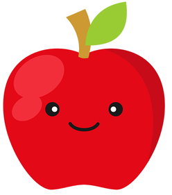
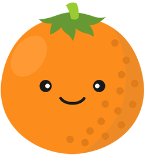
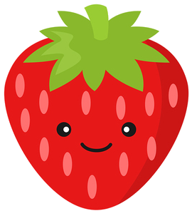

Nutrition Facts
"Eat breakfast like a king, lunch like a prince and dinner like a pauper."
-- Adelle Davis
Healthy Foods
- Almonds - ranked one of the most nutritious snacks, rich in nutrients and helps maintain healthy cholesterol levels
- Broccoli - best when eaten raw or lightly steamed/cooked, a 100g serving is 150% of Vitamin C's daily intake
- Apples - "An apple a day keeps the doctor away" considered a miracle fruit and contains antioxidants which basically slows your body's aging
- Kale - is high in Vitamin C and Vitamin K
- Avocados - contains many healthy fats
- Chicken - cheap and rich in protein
- Oily Fish and Eggs - good as well for protein
Unhealthy Foods
- Soda - increases risk for weight gain, diabetes, tooth decay
- French fries - contains at least 2 types of cancer-causing compounds
- Doughnuts - looks good, tastes good, but has zero nutritional value
- Coffee - one or two cups a day is okay, more than three is addiction
- Hot dogs - usually contains processed meat from unsafe sources
- Canned soup - contains high levels of fats, sodium, and MSG
- Chips - alarmingly addictive snack


